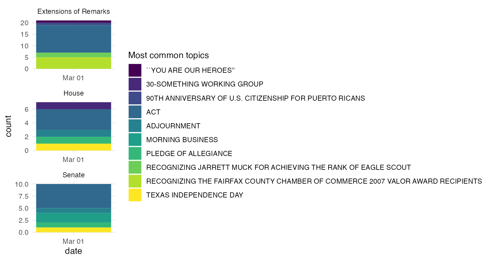
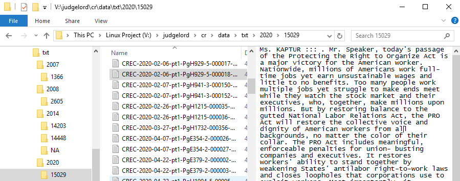

Usage
This package contains functions to do three things:
1. Scrape the text of the congressional record and metadata from congress.gov
-
scraper.Rcontains functions to scrape sections of the record and save them as htm files in a directory.get_cr_df()first scrapes metadata for all subsections for each day of the record, including headers and links to the raw text.get_cr_htm()then downloads the raw text of each subsection as a .htm file to a “data/htm” directory. - scraper methods are described here
#> 2007-03-01
cr_metadata#> # A tibble: 55 × 4
#> header date section url
#> <chr> <date> <chr> <chr>
#> 1 Senate; Congressional Record Vol. 153, No. 35 2007-03-01 senate-section https://www.congress.gov/congressional-record/volume-153/issue-35/senate-section/articl…
#> 2 prayer; Congressional Record Vol. 153, No. 35 2007-03-01 senate-section https://www.congress.gov/congressional-record/volume-153/issue-35/senate-section/articl…
#> 3 PLEDGE OF ALLEGIANCE; Congressional Record Vol. 153, No. 35 2007-03-01 senate-section https://www.congress.gov/congressional-record/volume-153/issue-35/senate-section/articl…
#> 4 APPOINTMENT OF ACTING PRESIDENT PRO TEMPORE; Congressional Record Vol. 153, No. 35 2007-03-01 senate-section https://www.congress.gov/congressional-record/volume-153/issue-35/senate-section/articl…
#> 5 RECOGNITION OF THE MAJORITY LEADER; Congressional Record Vol. 153, No. 35 2007-03-01 senate-section https://www.congress.gov/congressional-record/volume-153/issue-35/senate-section/articl…
#> 6 SCHEDULE; Congressional Record Vol. 153, No. 35 2007-03-01 senate-section https://www.congress.gov/congressional-record/volume-153/issue-35/senate-section/articl…
#> 7 RESERVATION OF LEADER TIME; Congressional Record Vol. 153, No. 35 2007-03-01 senate-section https://www.congress.gov/congressional-record/volume-153/issue-35/senate-section/articl…
#> 8 MORNING BUSINESS; Congressional Record Vol. 153, No. 35 2007-03-01 senate-section https://www.congress.gov/congressional-record/volume-153/issue-35/senate-section/articl…
#> 9 TSA; Congressional Record Vol. 153, No. 35 2007-03-01 senate-section https://www.congress.gov/congressional-record/volume-153/issue-35/senate-section/articl…
#> 10 FDA REGULATION OF TOBACCO; Congressional Record Vol. 153, No. 35 2007-03-01 senate-section https://www.congress.gov/congressional-record/volume-153/issue-35/senate-section/articl…
#> # … with 45 more rows
cr_metadata$url[1]#> [1] "https://www.congress.gov/congressional-record/volume-153/issue-35/senate-section/article/S2437-1"
get_cr_htm(cr_metadata$url[1])#> Navigating to /110/crec/2007/03/01/modified/CREC-2007-03-01-pt1-PgS2437.htm
read_html(here::here("data", "htm", "CREC-2007-03-01-pt1-PgS2437.htm")) #> {html_document}
#> <html>
#> [1] <body><pre>\n\n\n[Page S2437]\nFrom the Congressional Record Online through the Government Publishing Office [<a href="http://www.gpo.gov">www.gpo.gov</a>]\n\n[[Page S2437]]\n\n---------------- ...
2. Parse the record into .txt files by speaker
-
parser.Rcontains functions to parse htm sections of the record by speaker and tag members with their ICPSR ID numbers. By default,parse_cr()will parse all htm files in the “data/htm” directory for dates that do not already appear in a “data/txt” directory. You may specify a custom vector ofdatesorskip_parsed = FALSEif you don’t want to skipped files already parsed. - the parser methods are explained here
-
count_speeches.Rcontains methods to count speeches per member - summary tables and figures of speech counts are here
- the parsed .txt directory looks like this:

# default location where txt files will be saved
directory <- here::here("data", "txt")
# parse congressional record htm files by speaker
parse_cr()#> 2007-03-01
#> Typos fixed in 19 seconds
#> Searching data for members of the 110th, n = 1208 (324 distinct strings).
#> Names matched in 9 seconds
#> Joining, by = c("congress", "pattern", "first_name", "last_name")
parsed_cr <- list.files(directory, recursive = T) |> head()
parsed_cr#> [1] "2007/10713/CREC-2007-03-01-pt1-PgE444-000140-10713.txt" "2007/10713/CREC-2007-03-01-pt1-PgE444-000141-10713.txt" "2007/10713/CREC-2007-03-01-pt1-PgH2118-000715-10713.txt"
#> [4] "2007/10808/CREC-2007-03-01-pt1-PgH2043-3-000397-10808.txt" "2007/10808/CREC-2007-03-01-pt1-PgS2460-2-000940-10808.txt" "2007/10808/CREC-2007-03-01-pt1-PgS2487-6-001014-10808.txt"#> [1] "HON. JOHN CONYERS ::: , JR. of michigan in the house of representatives Thursday, March 1, 2007 "Speeches by John Conyers are in folder “10713” (his ICPSR number).
3. Count and extract sentences that contain user-specified phrases
- Preliminary work on feature extraction is here
- There is also a brief tutorial on feature extraction at the end of the scraper docs here

Notes about these data and methods
Notes about the parser
- The parser inserts “:::” after the speaker’s name in the parsed text to make them easy to extract.
- Parsed speeches include where members introduce legislation into the record. These are actually read by the clerk (beginning with the string “The Clerk read the title of the bill.”), but I decided to keep them associated with the member who introduced them.
- The introduction of speakers to the floor appear as separate “speeches.” Most all analyses will delete these and other super-short texts that are procedural things like “I yield back.” Introductions in the parsed text look like this: “HON. JOHN D. DINGELL ::: of Michigan in the house of representatives”–notably these intros contain state names.
- Occasionally, when a speaker makes a long speech, GPO divides it into subsections that don’t have the speaker’s name on the page (either in html or pdf). (For example, this speech by Senator Durbin). These get parsed as “headers” but are much longer than the typical header and are thus easy to identify. In the next version of the parser or some post hoc correction, I hope to re-attach these to the earlier pages of the speech.
Other notes
Hein-bound data
- Before deciding to scrape and parse the record from scratch, I tried to use existing speech data from Hein bound. Unfortunately, these data are incomplete and have a few errors. Most notably, they do not retain the date of the speech. My notes on these data and code to merge them with voteview data here. A few plots comparing Hein-bound speech counts to NOMINATE scores and vote share are here
To Do
Exclude prayer, the pledge, the journal, resignation, adjournment, executive communications, announcements, communications, appointment, reappointment, recess, recall, designations, additional sponsors, and other proceedural sections. (These texts are parsed and saved in the “NA” folder.)
Parse sections with more than one speaker, starting with “[SPEAKER NAME]. (Mister|Madam) Speaker,”. For example, see the Impeachment speaches, where speakers yield time to other speakers.
Check members with irregular capitalization beyond “Mc|Mac|Des|De|La”
Match speaker names to ICPSR IDs like I did here for the hein-bound data using the crosswalk crated here.
File bug report for names to fix in
legislatorspackage: Susan W. Brrooks